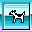

HTMLSample is an application that demonstrates the capabilities of the HTMLRenderingLib that is new for Mac OS 9. Facilities have been provided for adding custom buttons to the control bar at the top of the window, and for setting the default page displayed in a windows when no other file has been specified.
To set the default file displayed by HTMLSample, edit the 'CSTR' ID=128 resource. This resource contains a HTML link referring to a file relative to the application's folder. Whenever an empty window is created by default, the application will display this file. For example, to display the file 'index.html' that is located in the folder 'HTMLSample Pages' that is located in the same directory as the HTMLSample application, we would save the following link in the 'CSTR' ID=128 resource:
HTMLSample%20Pages/index.html
To display this link, the HTMLSample catenates it together the URL referring to the application's directory. Once the full URL has been determined, the program displays the page in the window.
To set the HTML file displayed by HTMLSample when a page cannot be located, edit the 'CSTR' ID=129 resource. This resource contains a HTML link referring to a file relative to the application's folder. Whenever the HTMLRenderingLib is asked to display a URL that does not map to a file on disk, the application will display this file. In this example, the 'CSTR' ID=129 resource contains the following application relative link:
HTMLSample%20Pages/error.html
To display this link, the HTMLSample catenates it together the URL referring to the application's directory. Once the full URL has been determined, the program displays the page in the window.
Navigation controls built in to the top of the window are grouped into two types. As shown in figure 1, there are the built in navigation buttons (back, home, and forward) and there are custom buttons that you can add via a utility such as ResEdit.
Figure 1. Built-in and custom buttons.
ResEdit templates have been included in the resource fork of this application for accessing the necessary resources. Be sure to make a backup of the application before doing any editing.
Buttons are described in a 'CICB' resources. These resources include the following information:
Consider the button that opened this page. Here, the button opens the HTML file named 'buttons.html' located in the 'HTMLSample Help' folder that is in the application's directory.
The html link referring to this file is:
HTMLSample%20Help/buttons.html
When the HTMLSample application attempts to display this page, it calculates the URL for the application's directory and catenates it with the link to determine the page's URL. Once the URL has been determined, the application displays the page in the window.
To define the appearance of the button, we have used the three color icons ('cicn' resources) shown in figure 2. The ID numbers for these resources are stored in the CICB resource.
|
Disabled 'cicn' |
Enabled 'cicn' |
Pressed 'cicn' |
|
|
|
 |
IMPORTANT: The disabled color icon resource ('cicn' ID = 136) is used by the default buttons. Do not remove or delete this 'cicn' if you are editing the file.
The CICB (Color ICon Button) resource provides a place to store icon's target and appearance information. In this example, we have created a 'CICB' resource with ID number 132. Figure 3 shows how this resource appears in a ResEdit window using the 'CICB' template in application's resource fork.

Figure 3. ResEdit window displaying the 'CICB' resource used in this example.
Here, the disabled, enabled, and down fields contain id numbers referring to the color icon 'cicn' resources we will be using, and the string data field contains the path name referring to the file we want displayed when the button is clicked.
The RBCL resource provides a place to store id numbers of all of the custom icon button resources that the application should display to the right of the default buttons. In the illustration shown in figure 4, there are two resources. ID number 131 refers to the help or question mark button, and ID number 132 refers to the button created in this example.

Figure 4. ResEdit window displaying the 'RBCL' resource used in this example.
In this implementation, the RBCL resource may contain up to 4 custom buttons.
Any links in the HTML being displayed by this application that refer to application files will launch those applications when they are clicked.